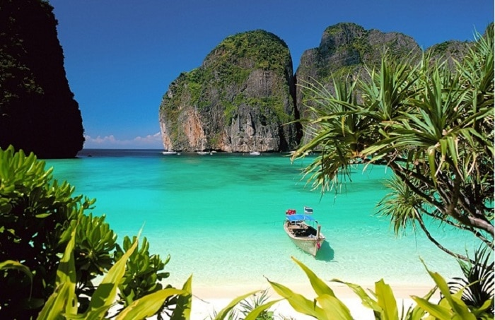
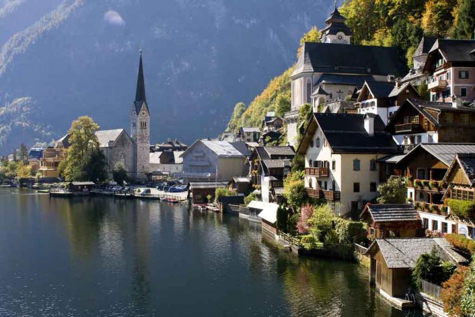
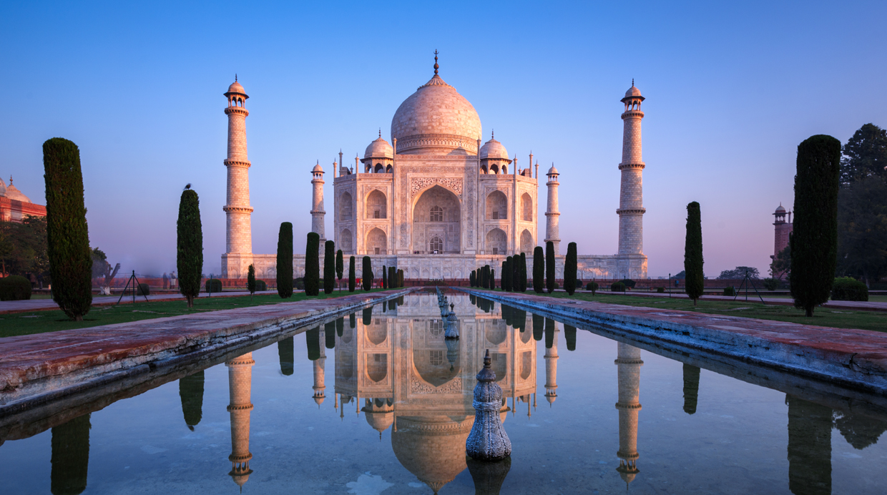
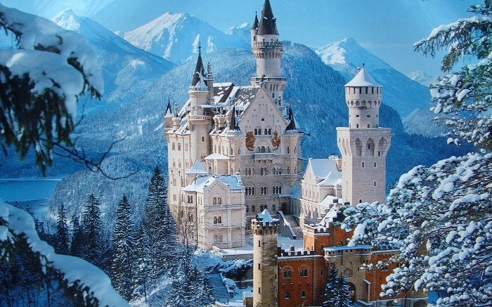
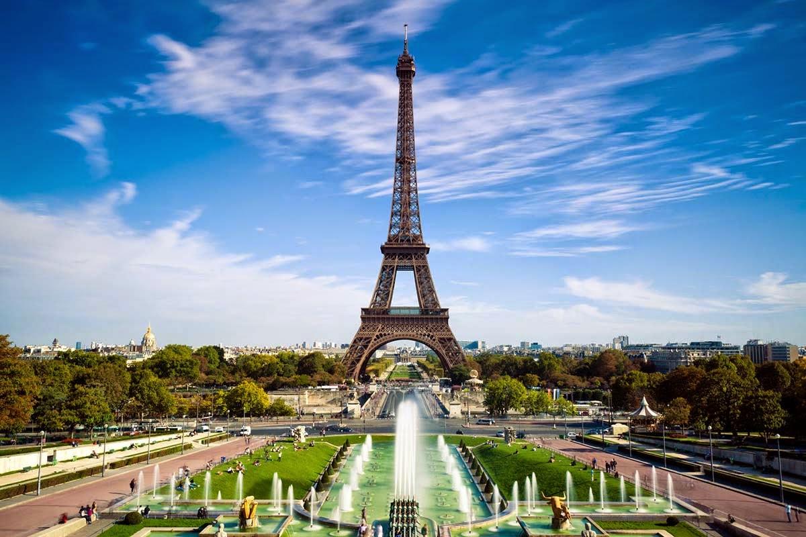
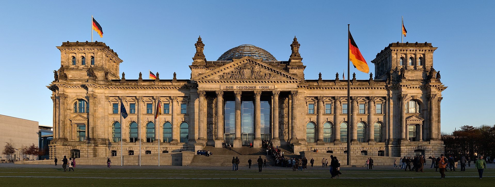
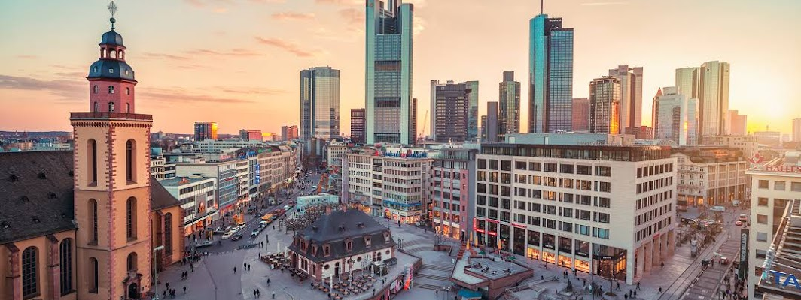

El edificio del Reichstag se encuentra en el barrio del Tiergarten, en el distrito Mitte de Berlín, capital de Alemania. Fue la sede del Reichstag en tiempos del II Imperio alemán (1871-1918) y más tarde del parlamento de la República de Weimar (1919-1933). Desde 1994 se reúne allí cada cinco años la Asamblea Federal (Bundesversammlung) para elegir al presidente de Alemania (Bundespräsident) y desde 1999 es el lugar de reunión del parlamento alemán (Bundestag).
El edificio, diseñado por Paul Wallot, terminó de construirse en 1894 siguiendo un estilo neorrenacentista. En 1933 fue víctima de un incendio provocado cuya autoría no llegó a esclarecerse del todo. Al final de la Segunda Guerra Mundial, durante la Batalla de Berlín, fue escenario de cruentos combates y resultó seriamente dañado. En la década de 1960 se realizaron las reformas más urgentes. El aspecto que tiene en la actualidad lo adquirió durante unas obras en los años 90, responsabilidad del arquitecto británico Sir Norman Foster.
Fráncfort, una ciudad central alemana en el río Meno, es un importante núcleo financiero que alberga el Banco Central Europeo. Es el lugar de nacimiento del famoso escritor Johann Wolfgang von Goethe, cuya antigua casa es actualmente el museo Casa de Goethe. Al igual que la mayor parte de la ciudad, fue dañada durante la Segunda Guerra Mundial y posteriormente reconstruida. La plaza Römerberg se encuentra en la Altstadt (Ciudad Vieja) reconstruida y es donde se realiza el mercado navideño anual.
La Altstadt tiene una hilera de casas con entramado de madera y la catedral gótica de Fráncfort. El Römer, un trío de casas de aristócratas medievales, funciona como el ayuntamiento de la ciudad desde comienzos de los años 1400. El distrito Bankenviertel está lleno de sobresalientes rascacielos. La calle Zeil, bordeada de grandes tiendas, es la principal avenida comercial de la ciudad. El distrito Sachsenhausen, en el lado sur del río, se conecta con la Altstadt mediante un puente peatonal. Cuenta con la Torre de Goethe y la Orilla de los Museos, donde hay varios museos, incluido el museo Städel de bellas artes y el Deutsches Filmmuseum, dedicado a la historia del cine.
Mi nombre es Sergio Andrés Díaz Vera , estudiante de fotografía y amante de las travesias por el mundo , los viajes y cualquier actividad que me lleve a conocer el mundo